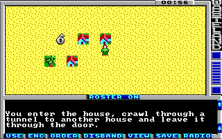

Game Tutorial Step 5: Creating transitions
With action class 10 (a) you can create transitions from one location to an other location. The destination can be on the same map or on a different map and coordinates can be specified relative or absolute. Additionaly a message can be printed when transitioning and the action class and action can be replaced after the transition.
<actions actionClass="0xa">
<transition id="0"
relative="true"
targetX="2"
targetY="1"
targetMap="1"
message="3" />
<transition id="1"
confirm="true"
relative="true"
targetX="-2"
targetY="1"
targetMap="1"
message="3" />
</actions>
This is the first time we have more than one action in the action container. The second action has the id 1 and must be referenced with the value 01 in the actionMap.
To reference our two new actions, add two more houses to your map. The second house must be on the right of the first house with one empty square between it. Give both squares the action class a, give the first house the action 00 and the second house the action 01.
The first action moves the player two squares to the east and one square to the south. If you placed the two houses correctly then this leads to the square below the second house. When transitioning message string 3 is displayed. The second action moves the player two squares to the west and one square to the south. This leads to the square below the first house. This action has set the attribute confirm to true. This means that the player must confirm the transition (Enter new location?).
A targetMap value of 255 is special: This means moving the player back to the previous map. This is used for example in the derelict building maps of the original game. The player can enter these maps through various doors and when the player leaves a derelict building the player will end up at the old position again.
Oh, we forgot to add the string which is referenced by both transitions. Here it is
<string id="3">\rYou enter the house, crawl through a tunnel to another house and leave it through the door.\r</string>
You can download the current state of the map here: map01.xml.
